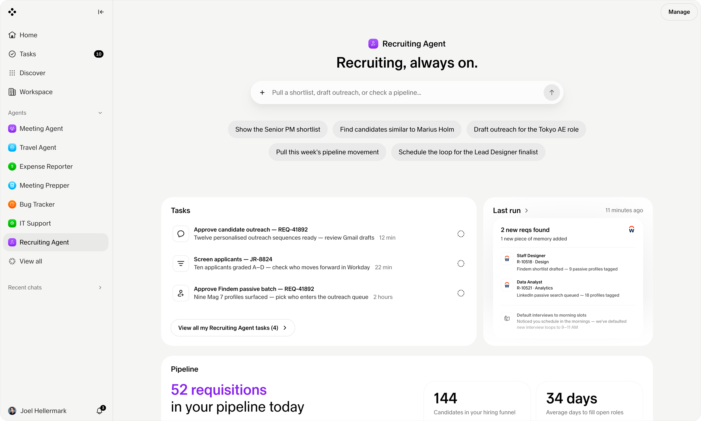

Embedding Ambient Agents across Work

TL;DR
Key Features
The Handshake Protocol
A shared contract for how an agent introduces itself, asks permission, and hands control back. The same protocol runs on every platform, so the agent feels like one entity rather than three clones.
Ambient Presence
The agent lives in the periphery of the task, not the center of the screen. It watches the work, prepares the next step, and only steps forward when intervention beats silence.
Cross-Platform Parity
Behavior, tone, and trust signals stay constant from Agentforce to Teams. People learn the agent once and carry that mental model wherever their work takes them.
Deep Dive
Designing for the PeripheryWhy the best agent is the one you barely notice
Attention is the cost
Every prompt an agent demands is a tax on the person's focus. Ambient design inverts the default: silence first, surface only when the value clearly outweighs the interruption.
Earning the interruption
The agent has to prove the moment is worth it — timing, relevance, and a frictionless way to dismiss are the difference between helpful and intrusive.
ReflectionAligning two companies behind one behavior
What worked
A shared protocol gave partner teams something concrete to build against — less debate, more shipping.
What I'd refine
Tighter telemetry on when the agent chose to surface, so we could tune the interruption threshold with data rather than intuition.